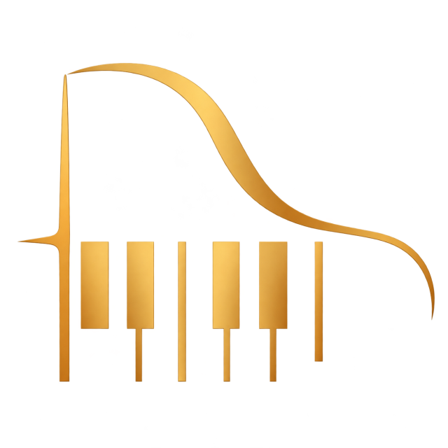

Alcance de notas
O piano acústico moderno geralmente possui 88 teclas, distribuídas em 7 oitavas e uma terça menor.

Um instrumento incrível, capaz de transformar seus sentimentos em música.

O piano surgiu no início do século XVIII, na Itália, a partir do trabalho de Bartolomeo Cristofori. Seu mecanismo permitiu controlar a intensidade do som conforme a força aplicada às teclas, ampliando as possibilidades de expressão musical.
Conheça mais sobre sua história →O piano é um dos instrumentos mais completos, capaz de produzir sons graves e agudos ao mesmo tempo e de marcar presença em diversos estilos musicais.
O piano acústico moderno geralmente possui 88 teclas, distribuídas em 7 oitavas e uma terça menor.
Está presente na música clássica, no jazz, no pop, no rock e em trilhas sonoras.
Tocar piano envolve atenção, memória, leitura musical e coordenação entre as mãos.
Existem diferentes modelos, cada um com características próprias para atender a necessidades e ambientes variados.

Possui cordas e estrutura dispostas horizontalmente, com grande projeção sonora.

Tem estrutura vertical e ocupa menos espaço, sendo comum em residências e escolas.

Reproduz sons eletronicamente e oferece recursos como controle de volume e fones.
Descubra novas composições, aprenda mais sobre este instrumento e encontre sua próxima música favorita no Timbre.
Explorar agora →